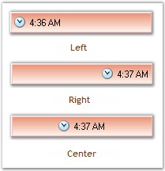
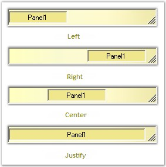

This section discusses the alignment settings of the StatusBarAdvPanel control.
The contents of the StatusBarAdvPanel can be aligned using the property given below.
|
StatusBarAdvPanel Property |
Description |
|
Alignment |
Indicates the alignment type of the text and icon of the panel. The options included are as follows.
· Left, · Right and · Center. |
|
[C#]
this.statusBarAdvPanel1.Alignment = System.Windows.Forms.HorizontalAlignment.Left; |
|
[VB.NET]
Me.statusBarAdvPanel1.Alignment = System.Windows.Forms.HorizontalAlignment.Left |

Figure 1026: Alignment Options
HAlign
The horizontal alignment of the StatusBarAdvPanels in the StatusBarAdv control can be customized using the property given below.
|
StatusBarAdvPanel Property |
Description |
|
HAlign |
Indicates the horizontal alignment in the FlowLayout. It includes the options given below.
· Left, · Right, · Center and · Justify.
The 'Justify' option will expand the panel to occupy any extra spaces in the control. |
|
[C#]
this.statusBarAdvPanel1.HAlign = Syncfusion.Windows.Forms.Tools.HorzFlowAlign.Left; |
|
[VB.NET]
Me.statusBarAdvPanel1.HAlign = Syncfusion.Windows.Forms.Tools.HorzFlowAlign.Left; |

Figure 1027: HAlign Options